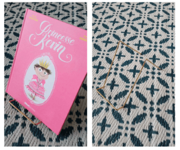
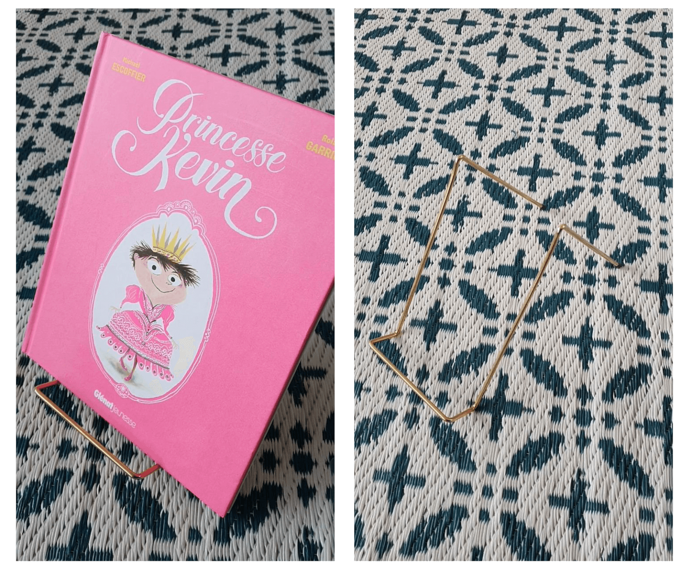
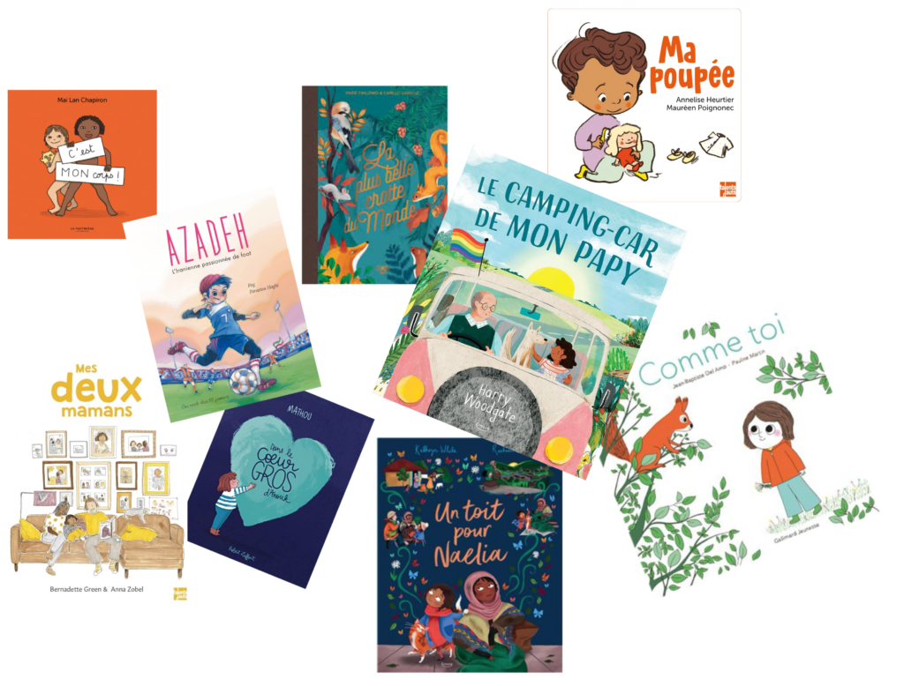

Chaque jour, après la pause méridienne, j'organise un temps de « silence, on lit » dans ma classe. Les élèves s'installent où iels veulent et dans la position de leur choix mais la règle est stricte, j'exige un silence absolu pour ne pas déranger les autres.
Lors de ce moment de calme, j'offre très souvent une lecture d'album aux élèves. Je choisis les livres en fonction de ce que j'ai envie d'aborder comme sujet (le sexisme, le racisme, l'homophobie, le validisme, en lien avec la science, ou l'histoire…) ou juste parce que je le trouve drôle, beau… Les élèves donnent ensuite leurs impressions sur cette lecture et on en discute toustes ensemble pendant quelques minutes.
Une fois lus collectivement, les livres sont disposés sur des présentoirs (il y en a huit en tout). Les élèves y ont accès à volonté mais doivent impérativement les remettre en place à chaque fois. Ces livres ont un côté particulièrement précieux qui les attire beaucoup car ce sont ceux de mes enfants que je ramène spécialement pour elleux au fur et à mesure de l'année. Je ne les laisse en classe que quelques semaines et chaque fois que j'en apporte un nouveau, j'en enlève un que je ramène chez moi.
Au début de l'année je leur lisais un livre par jour au retour de la cantine pour les habituer à ce moment nouveau (mes collègues ont commencé à le mettre en place cours d'année, ça n'était pas une habitude d'école avant) puis une fois que le plis de ce temps de lectures a été pris, on a commencé à alterner entre lecture libre et lecture offerte. En général je leur offre une lecture une ou deux fois par semaine en fonction de nos envies.
Mon objectif principal c'est qu'iels apprennent à trouver du plaisir